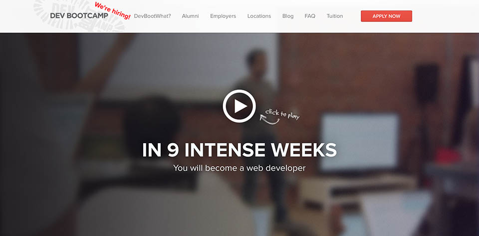

My Thoughts on DBC Culture

The DBC experience seems to be exactly what I have been craving. Mix together a group of diverse, crazy dedicated, and caring students with equally crazy dedicated, caring, and experienced teachers in an environment of hands-on learning and what do you get? Awesomeness! Or at least that is my hope.
I have desired a learning culture like this for a very long time. The residential high school I attended was a lot like this with lots of very dedicated students coming together to share knowledge and experiment together. It was so awesome and yet so different from the disconnected uninterested apathy of college.
I won't lie I am a little nervous. The culture is enticing, but only a fool would discount the effort needed to maintain 14 hours a day for 9 weeks. However, sometimes you just have to remove all doubt as to reaching the goal you seek and take a giant leap of faith. All in all I can't wait to experience another distinct culture of shared learning again! Perhaps it will be even better? Only time will tell.